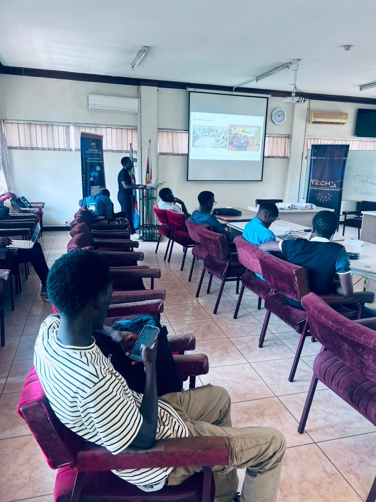
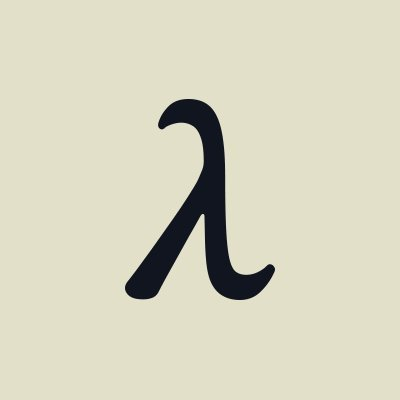
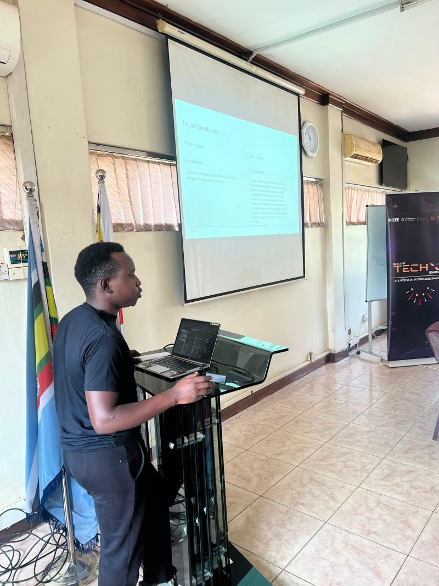
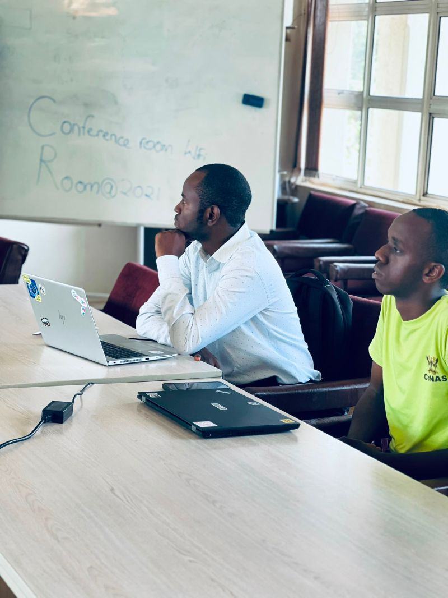
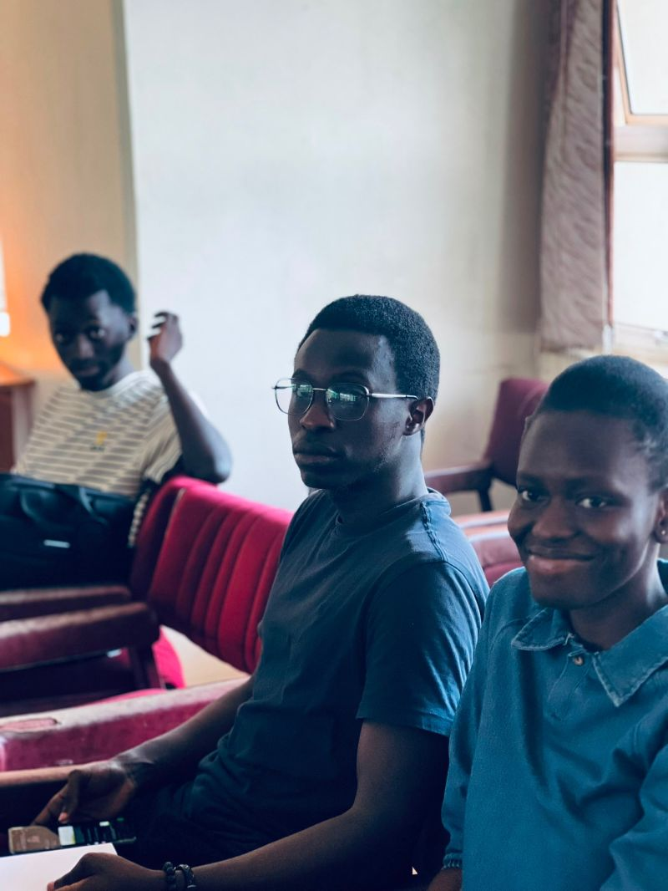

Logos Circles Kampala
You are probably wondering: what is Logos? I was asking the same question walking in. By the time I walked out, I had a new framework for thinking about community action, a handful of new connections, and a Kahoot podium finish.

About Logos
Logos is a social movement and decentralised technology stack focused on revitalising civil society. A Circle is a group of people who come together to identify and solve high-impact, feasible, and pressing problems (Winnable Issues) within their communities.
Highlight
Podium finish in the Kahoot competition hosted by Benjamin Wakida Eldon (Kahoot Ambassador) — with bragging rights and swag!
The Session: Winnable Issues
The session was led by Dev Johnson, who introduced us to Logos, shared insights about other circles across Africa, and facilitated a brainstorming session on potential problems we could tackle as a community. The energy in the room was electric: people from different backgrounds throwing ideas on the table, debating which ones were actually winnable, and sketching out first steps before the session even ended.
We broke down what makes an issue "winnable": it has to be high-impact, feasible with the resources we have, and pressing enough that people feel the urgency. Some of the ideas ranged from digital literacy for market vendors to environmental clean-up campaigns tied to local tech meetups.
The Kahoot Showdown
Benjamin Wakida Eldon, the Kahoot Ambassador, closed the session with a quiz that turned competitive fast. I managed to secure a podium finish (bragging rights fully earned) and even walked away with some swag. A reminder that learning and fun belong in the same room.
People Who Made the Room
It was great meeting so many new people. Grateful to everyone who contributed to making the space engaging, welcoming, and lively.
Event Gallery




Looking Forward
I am looking forward to attending more sessions, learning from the community, and sharing the experience with others. If Logos Circles sounds like something you would want to be part of, reach out and I will point you to the next session. The more people show up, the more Winnable Issues we can actually win.